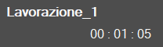
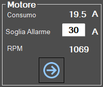

In the central section of the screen is shown the movement of the machine in real time on the working area. The cuts of the piece that have already been executed, are colored in green, while those still to be carried out keep their original color.

Job name and time employed Are shown the name of the running program and the time the machine is taking for its execution.
In this section you can view some information related to the motors of the machine.

Motor
Main spindle motor.
External motor
Motor of Tool_, if present.
It is possible to change information card with the buttons below.
Previous/next information panel These buttons allow the operator to change the category of displayed information.
For each motor, is shown:
Intake
Indicate the current absorbed by the motor.
Ampere threshold
Indicates the Ampere threshold beyond which the alarm is activated and the rotation of the motor is locked. It is recommended to set the value based on the mounted tool and the working that you are doing.
RPM
Indicate the number of engine rotations per minute. If the direction of rotation is clockwise, the value results positive. Otherwise if the direction is counterclockwise, the sign is negative.
Turning on / Turning off internal water By pressing this button, water is activated from inside the tool. The indication above the button changes the color: Green = On; Red = Off.
Turning on / Turning off external water By pressing this button, the water of the main conduit is activated. The notification above the button changes the color: Green = On; Red = Off.
Enable/Disable suction cups The screen shows the vacuum cups group seen from above in the various zones in which is divided. Pressing on the interested area, its state is changed. If green indicates that the zone is prepared to make the vacuum. If red indicates that the zone is predisposed for the blast.
SUCTION CUPS: LIFT - Vacuum parking At pressure of the button, the suction cups are made re-enter so as to bring them in the rest/parking zone.
SUCTION CUPS: LOWER - Prepare suction cups At pressure of the button are made descend the suction cups from the parking zone until the limit switch. It is important that the suction cups have the necessary space to outflow completely.
LIFT PIECE: RELEASE - Unload piece At the button press, the Z axis is lowered until the material contacts the workbench, the vacuum pump is switched off and the blow is turned on from all the suction cups to detach the piece. After a timeout, the axis is raised to safety height.
LIFT PIECE: START - Lift piece With this command the vacuum cups are brought to contact with the material, the vacuum pump is turned on in the areas marked in green and the blow in the areas marked in red, and when the vacuum switch signals that the vacuum has been generated, the axis is raised to the position set for the movements.
Warning
WARNING!Pay attention to the active suction cups making in order to utilize the greatest area possible to lift the piece.
BLOW - Command Blow The button turns on or off the wind from the suction cups that are not predisposed for the vacuum. The indicator shows if the wind is on (green) or off (red).
Vacuum - Command vacuum pump This button turns on and off the vacuum pump. The indicator signals if the pump is on (green) or off (red).